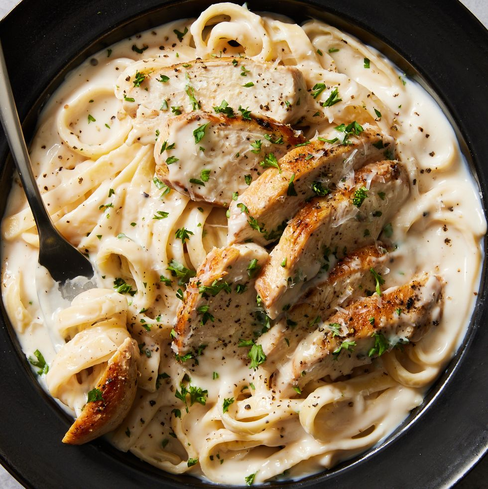

Chicken Alfredo

Description
While it may seem fancy, this chicken Alfredo recipe is a beginner-friendly dish that truly anyone can master. With a creamy, cheesy sauce and tender chicken breasts, it's the pasta dish we turn to time and time again when we're craving the ultimate comfort meal. If you've never made pasta sauce from scratch before—this Alfredo recipe is where you should start. Fair warning: No jarred pasta sauce may compare after you've made this homemade recipe.
This one-pot dinner comes together in 30 minutes, making it a perfect easy meal to whip up for any occasion, whether you're searching for a romantic meal for two to impress this Valentine's Day, or the most satisfying weeknight dinner. Never made Alfredo before? Follow our top tips and tricks for acing this homemade dish.
Ingredients
- 2 tbsp. extra-virgin olive oil
- 2 boneless skinless chicken breasts
- Kosher salt
- Freshly ground black pepper
- 1 1/2 c. whole milk
- 1 1/2 c. low-sodium chicken broth
- 2 cloves garlic, minced
- 8 oz. fettuccine
- 1/2 c. heavy cream
- 1 c. freshly grated Parmesean
- Fresly chopped parsley, for garnish
Steps
- In a large skillet over medium-high heat, heat oil. Add chicken and season with salt and pepper. Cook until golden and cooked through, 8 minutes per side. Let rest 10 minutes, then slice.
- Add milk, broth, and garlic to skillet. Season with salt and pepper and bring to a simmer. Add fettuccine, stirring frequently for about 3 minutes. Let cook until al dente, 8 minutes more.
- Stir in heavy cream and Parmesan until combined. Simmer until sauce thickens.
- Remove from heat and stir in sliced chicken. Garnish with parsley.